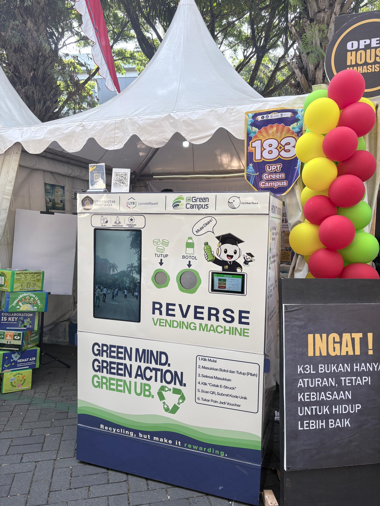
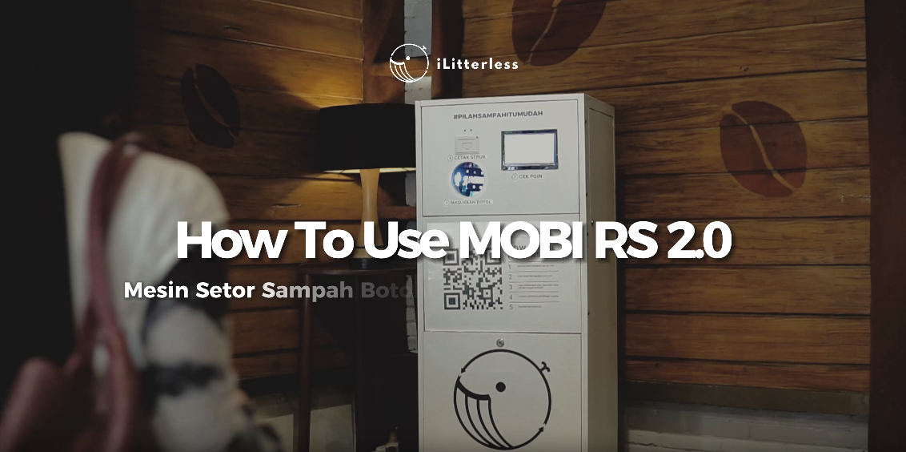
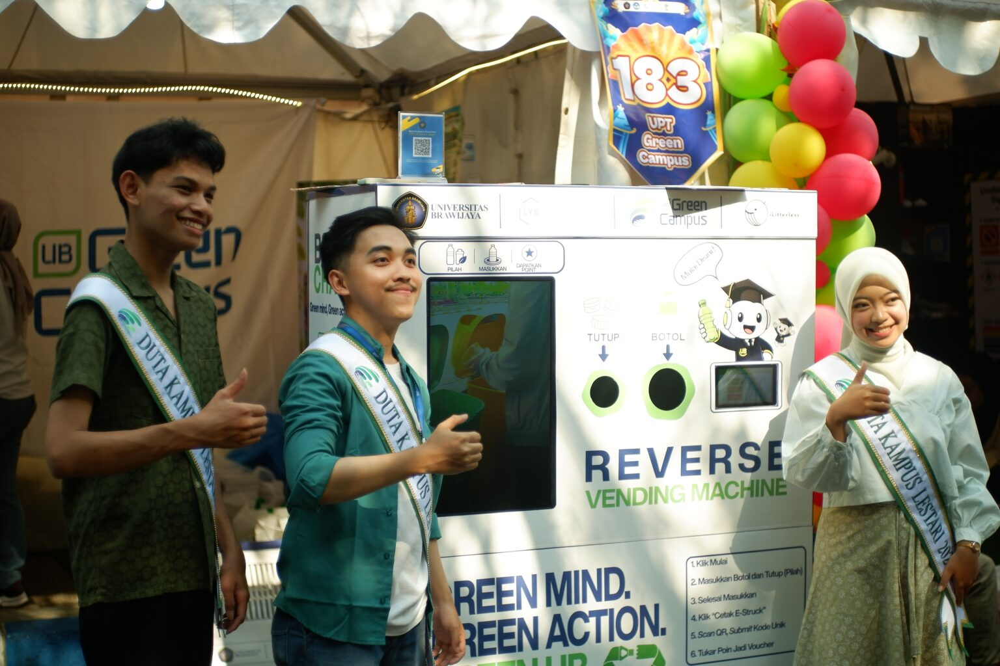
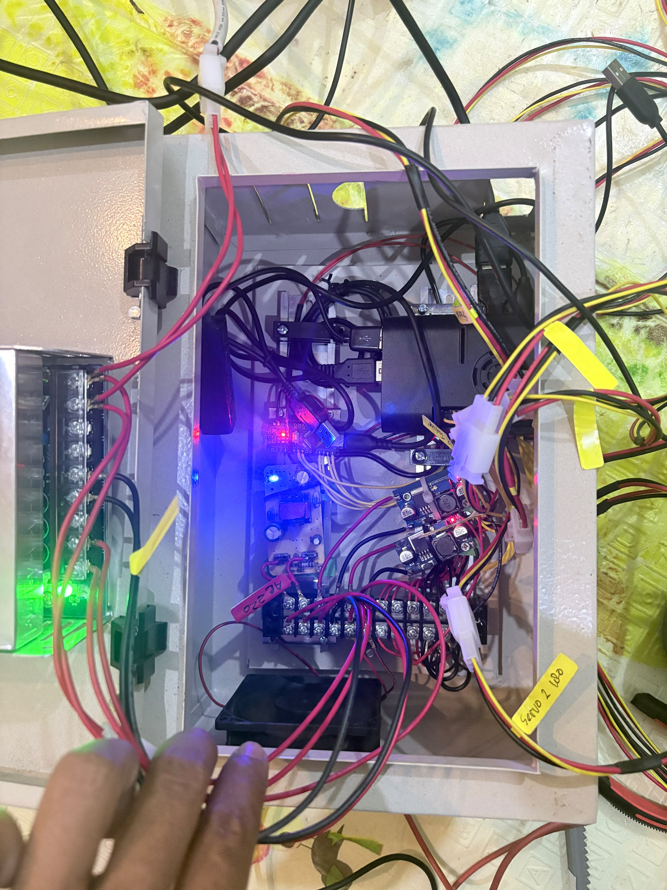
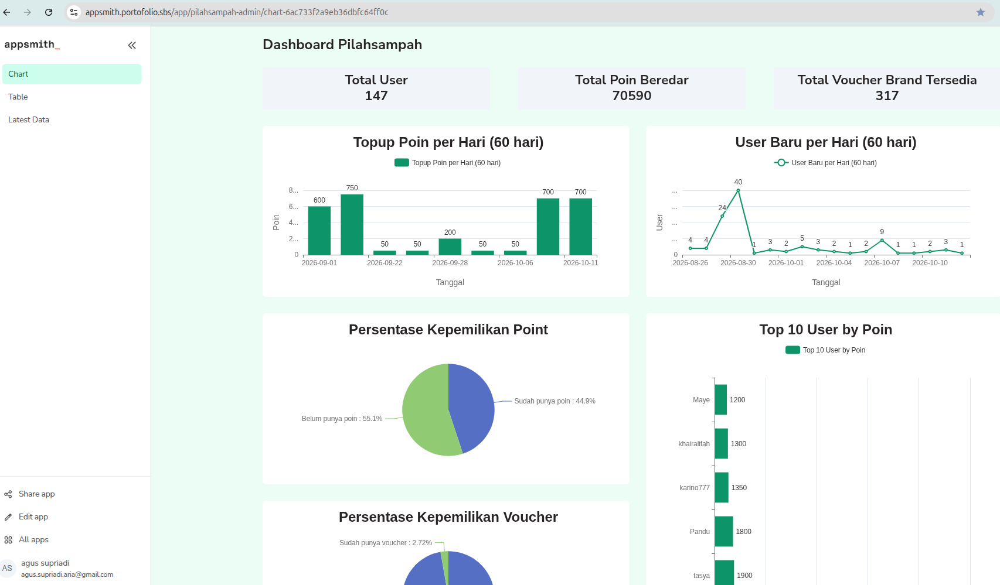

Agus Supriadi
IoT & Automation Engineer (Junior)
- Merancang dan membangun mesin ATM Sampah berbasis IoT: kelistrikan, software mesin, website, server, dan dashboard.
- Pernah dipasang di tiga lokasi di Malang. Di UB Greencampus mesin beroperasi 42 hari dengan 1 gangguan.
- Belajar IoT otodidak sejak 2019, dan sekarang menguji deteksi botol dengan YOLO di Raspberry Pi.

Demo
Mesin bekerja, dari botol sampai barcode
Video singkat cara kerja mesin di lokasi. Video lainnya ada di kanal YouTube saya.
Video: Demo Mesin ATM Sampah
Mesin di lapangan
Satu sistem, dikerjakan dari rancangan sampai server
Saya merancang sistem, kelistrikan, board, dan software mesin, serta membuat website, mengelola server, dan membuat dashboard admin. Rangka mesin dirakit dan difabrikasi tim di Malang. Dikembangkan bersama iLitterless Indonesia.



Alur sistem
Dari botol ke voucher, tanpa input manual
Data transaksi dibawa barcode terenkripsi dari mesin ke website. Website memeriksa, menghitung poin, dan membuat voucher sendiri.
Di mesin
Raspberry Pi 4 + Arduino Nano
- Botol dimasukkan. IR sensor mendeteksi dan servo bergerak, diatur Arduino Nano.
- Raspberry Pi mencatat id, nominal, dan tanggal transaksi.
-
Mesin menampilkan barcode terenkripsi:
AES-256-CBC+HMAC-SHA256.
Di website
WordPress + MySQL
- User scan barcode. Data didekripsi dan form terisi otomatis.
- ID transaksi dicek. Yang sudah pernah masuk diberi flag dan tidak dihitung.
- Poin masuk ke akun. Saat withdraw, poin berkurang dan kode voucher dibuat otomatis.
Untuk admin
Appsmith + Metabase + SSH
- Dashboard membaca database MySQL: data user, poin, dan withdraw secara real-time. Mesin dipantau dari jarak jauh lewat SSH dan Raspberry Pi Connect.
Hasil
42 hari berjalan di UB Greencampus
Data periode 1 September sampai 12 Oktober 2026.
- Listrik sempat padam, dan mesin tetap berjalan.
- Poin dan withdraw dulu diproses manual dengan estimasi 3 hari kerja. Sekarang otomatis dengan validasi.
- Mesin berkembang dari prototype berkomponen plastik yang perlu kalibrasi, menjadi versi besi dan aluminium yang stabil saat dipindah.
YOLO
Prototype · tahap ujiDeteksi botol dengan YOLO di Raspberry Pi
YOLO11n berjalan di Raspberry Pi 4 dan mendeteksi botol. Jika botolnya sesuai, GPIO menyalakan lampu. Belum terhubung ke mesin. Langkah berikutnya: memverifikasi botol di ATM Sampah, lalu menjadi dasar sistem smarthome dengan ESP32 atau Raspberry Pi.
Tech stack
Yang saya pakai sehari-hari
- IoT & Embedded
- Raspberry Pi 4, Arduino Nano, IR sensor, servo, GPIO, rangkaian power (trafo stepdown), C++, Python
- AI / Vision
- YOLO11n di Raspberry Pi (tahap uji)
- Keamanan data
- AES-256-CBC + HMAC-SHA256, validasi transaksi ganda
- Backend & Database
- WordPress (Forminator, plugin custom), MySQL, PostgreSQL, REST API, Supabase
- Dashboard
- Appsmith dan Metabase, self-hosted dengan Docker Compose
- Infra & Tools
- Linux (Ubuntu), SSH, VPS (Hostinger, CloudPanel), Cloudflare, Git / GitHub
- Web
- React, TypeScript, Tailwind CSS. Contoh: Prodash, dashboard produk dengan Supabase dan Recharts. Juga Taskly, aplikasi to-do dengan login Supabase Auth dan Row-Level Security.
- AI tools
- Claude, ChatGPT, Gemini, DeepSeek, Hugging Face. Dipakai untuk mempercepat penulisan dan review kode. Desain sistem, kelistrikan, dan debugging saya kerjakan sendiri.
Kontak
Siap wawancara dan demo langsung
Saya bisa menunjukkan mesin, server, dan dashboard secara langsung, dengan data pengguna disamarkan. Saya mencari posisi entry level IoT atau automation, utamanya di Yogyakarta.